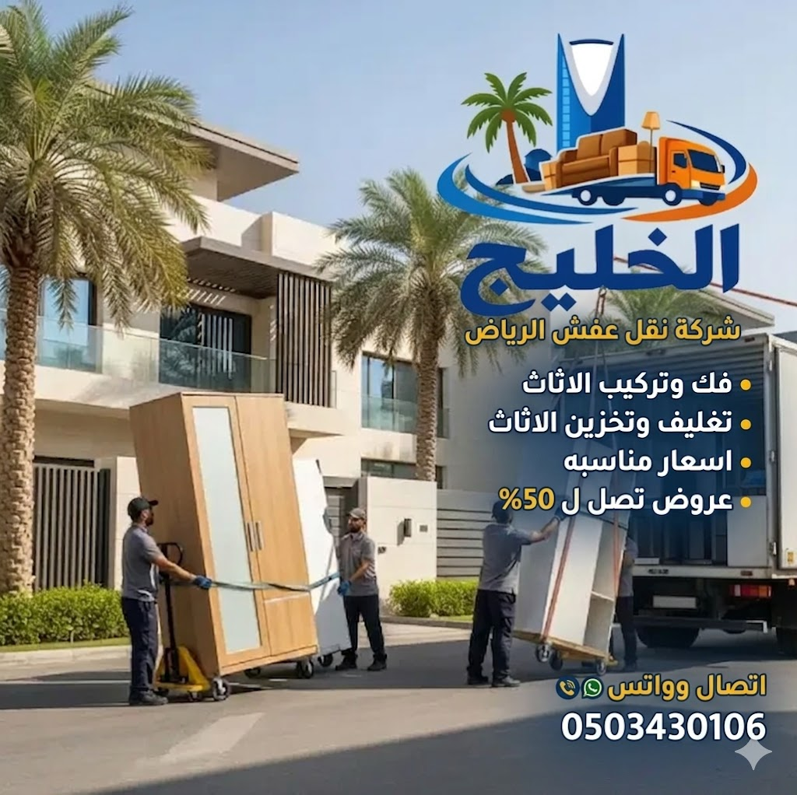

نقل عفش من الرياض للقصيم
يتطلب نقل عفش من الرياض للقصيم تخطيطاً مسبقاً ينظم مراحل العمل بدقة، نظراً للمسافة الفاصلة بين العاصمة ومدن القصيم وتعدد تفاصيل المنقولات المنزلية والمكتبية. إن نجاح هذه العملية يبدأ بحصر كمية الأثاث بدقة، وتحديد أبعاد القطع الرئيسية، ومعرفة وجهة التسليم المحددة سواء كانت داخل بريدة أو عنيزة أو غيرهما من محافظات المنطقة. كما يسهم اختيار وسيلة النقل الملائمة لحجم الحمولة الفعلية في حماية المنقولات وتفادي تكدسها أو تحركها أثناء المسار. من هذا المنطلق، تحرص شركة الخليج لنقل العفش على ترتيب متطلبات الفك والتغليف المسبق والتنزيل بما يتطابق مع تفاصيل كل شحنة، مما يمنح العميل وضوحاً كاملاً حول نطاق الخدمة والتكلفة والمواعيد المناسبة قبل انطلاق النقل.
خدمة نقل عفش من الرياض للقصيم
تختلف متطلبات نقل الأثاث بين المدن جذرياً عن أعمال النقل المحلية المحدودة داخل أحياء الرياض. فعندما تكون الوجهة هي منطقة القصيم، ينبغي دراسة كافة تفاصيل الرحلة بعناية؛ بدءاً من نقطة التحميل في الرياض وحتى الوصول إلى العنوان المستهدف داخل القصيم. ولا يقتصر التقييم السليم على حساب عدد الصناديق فحسب، بل يمتد إلى معرفة نوعية القطع، سواء كانت غرف نوم رئيسية تتطلب الفك الدقيق، أو أطقماً كنب ثقيلة، أو أجهزة كهربائية حساسة، أو واجهات زجاجية وطاولات طعام كبيرة.
إن الفارق الجوهري بين نقل محتويات مسكن كامل ونقل عدد محدود من القطع يحدد بشكل مباشر طبيعة التجهيزات المطلوبة. فنقل المنزل الكامل يستلزم جدولة زمنية للتحميل وفريقاً متكاملاً لإدارة الفك والترقيم، في حين يتطلب نقل القطع الفردية تثبيتاً محكماً يضمن استقرارها طوال مسار الطريق السريع.

تنظيم تحميل وتجهيز العفش وفق المعايير المناسبة للنقل بين المدن
النقاط الأساسية الواجب تحديدها قبل حجز الخدمة:
- موقع الاستلام بالرياض: الحي، وسهولة وقوف شاحنة النقل، ورقم الدور، وتوفر المصعد.
- وجهة التسليم بالقصيم: المدينة المحددة (مثل بريدة أو عنيزة) والحي ومواصفات المبنى المستلم.
- حجم المنقولات وأبعادها: حصر القطع الضخمة كالدواليب الممتدة، والأسرة العريضة، وطاولات المجالس.
- متطلبات الفك والتغليف: حصر القطع الخشبية التي تحتاج فكاً مسبقاً، والأسطح القابلة للخدش.
- ظروف التحميل والتفريغ: التحقق من وجود ممرات ضيقة أو سلالم ملتوية تستدعي تعاملاً خاصاً.
- الاتفاق المسبق على الموعد والتكلفة: تثبيت نطاق الأعمال والخدمات المطلوبة قبل تأكيد الرحلة.
يساعد توضيح هذه العناصر في البداية على وضع تقدير سعري موضوعي يغطي كافة جوانب العمل المتفق عليها، مما يمنع حدوث أي مفاجآت تشغيلية أثناء تحميل المنقولات في الرياض أو عند تسليمها في القصيم.
نقل أثاث من الرياض إلى بريدة
تمثل مدينة بريدة المركز الإداري وأكبر مدن منطقة القصيم، وتشهد حركة تنقل مستمرة للعائلات والموظفين والأنشطة التجارية القادمة من العاصمة الرياض. وتتطلب طلبات نقل الأثاث المتجهة إلى بريدة عناية خاصة في تنسيق المواعيد وتوصيف المنقولات، نظراً لتنوع الأحياء السكنية واتساع النطاق العمراني في بريدة.
عند التخطيط لنقل أثاثك إلى بريدة، فإن الخطوة الجوهرية الأولى تتمثل في إعداد قائمة حصر مفصلة بالأثاث المنزلي؛ حيث يتم تصنيف القطع إلى أثاث ثقيل يحتاج تفكيكاً (مثل دواليب الملابس ذات الأبواب المتعددة، ووحدات المطابخ، والأسرة المزدوجة)، وأثاث معتدل الحجم، وكراتين محكمة الإغلاق. يسهم هذا الحصر في تحديد المساحة الاستيعابية الملائمة داخل سيارة النقل، وضمان عدم تراكم الأغراض فوق بعضها بصورة قد تلحق الضرر بالأجزاء السفلية.
قائمة المعلومات العملية التي ينبغي تجهيزها قبل طلب عرض السعر لمدينة بريدة:
- عنوان التسليم المحدد في بريدة: ذكر اسم الحي وطبيعة الشارع وموقع العقار بدقة لتسهيل وصول مركبة النقل.
- حصر القطع الكبيرة وغير القابلة للتجزئة: مثل المجالس الكبيرة، والأجهزة الكهربائية كالثلاجات والغسالات الكبيرة.
- درجة حساسية المنقولات: حصر واجهات العرض الزجاجية، والمرايا الجدارية، والتحف الفنية، لترتيب مواد حماية مناسبة لها.
- تفاصيل التنزيل في موقع بريدة: هل التسليم في دور أرضي، أم دور علوي يتطلب استخدام الدرج أو المصعد الداخلي؟
- موعد الاستلام المفضّل: تحديد اليوم والوقت الأنسب للبدء بتحميل العفش من مسكنك في الرياض.
إن التحضير المبكر واستيفاء هذه البيانات قبل التواصل مع مسؤولي الحجز يتيح التحقق من المواعيد التشغيلية المتاحة لمركبات النقل، ويضمن تقديم تسعيرة واضحة تراعي كافة متطلبات التحميل والنقل والتفريغ في بريدة.
نقل أثاث من الرياض إلى عنيزة
تتميز مدينة عنيزة بطبيعتها العمرانية الهادئة وكثرة أحيائها السكنية المنظمة. وتختلف طلبات النقل المتجهة إلى عنيزة من حيث طبيعة العقارات المستلمة؛ إذ يغلب على الكثير منها طابع الفلل السكنية المستقلة أو الشقق الواسعة، وهو ما يفرض نمطاً منسقاً في توزيع القطع فور وصولها وتفريغها في الغرف المحددة لها.
إن التعامل مع طلب النقل إلى عنيزة كمسار مستقل يضمن دراسة التوقيت الملائم لوصول الشاحنة، وتفادي فترات الذروة، والتنسيق الدقيق مع الشخص المستلم في موقع التسليم. فالهدف الأساسي ليس مجرد شحن الأثاث، بل ضمان وصوله في حالة سليمة ومطابقة تماماً لحالته وقت مغادرته الرياض، مع إتاحة المجال لتسليم المنقولات بسلاسة وفق الأولويات التي يحددها العميل.
توضيح اسم الحي والشارع وموقع المنزل، للتأكد من إمكانية وقوف الدينا أو سيارة النقل بمحاذاة المدخل الرئيسي دون إعاقة حركة السير.
تقديم بيان بنوعية القطع (غرف معيشة، دواليب، مكاتب، مجالس) لمواءمة طريقة التغليف ومساحة التثبيت داخل صندوق الشاحنة.
الاتفاق على ما إذا كان الطلب يتضمن التنزيل والترتيب داخل الغرف في عنيزة أو يقتصر على التوصيل المباشر أمام العقار.
يسهم هذا الوضوح الشامل في تسهيل مهمة فريق العمل وضمان تجربة نقل مريحة ومنظمة للعميل الراغب في الانتقال والاستقرار داخل مدينة عنيزة دون أي عناء أو تعقيدات.
دينا نقل عفش الرياض القصيم
تحظى دينا نقل عفش الرياض القصيم بطلب كبير من قبل العملاء الباحثين عن وسيلة مرنة واقتصادية لنقل حمولات الأثاث المتنوعة. ولكن اختيار الدينا ينبغي أن يستند دائماً إلى دراسة دقيقة لأبعاد الأثاث وحجم الحمولة الإجمالي، وليس لمجرد توافرها؛ إذ إن صندوق الدينا يمتلك أبعاداً هندسية محددة وسعة حمولة قصوى لا يجوز تجاوزها لضمان معايير السلامة والأمان على الطرق السريعة.
تلعب أبعاد الدواليب الشاهقة، وأطقم الكنب ذات المقاسات الكبيرة، وطاولات الطعام العريضة دوراً محورياً في استهلاك حيز السيارة. لذا، فإن فك الأجزاء القابلة للتجزئة يسهم بشكل مباشر في استغلال الارتفاع والمساحة الأرضية للدينا بطريقة متوازنة ومستقرة.
اختيار وسيلة النقل الملائمة لحجم الحمولة وكمية الأثاث المنقول
متى تكون الدينا مناسبة لنقل العفش؟
تكون سيارة الدينا خياراً مثالياً وعملياً في الحالات التالية:
- نقل محتويات شقة صغيرة تتكون من غرفة أو غرفتي نوم وصالة معيشة مع عدد محدود من الأجهزة الكهربائية.
- نقل قطع أثاث محددة، مثل طقم كنب مجلس مع طاولة، أو غرفة نوم رئيسية مفرقة، أو مكاتب عمل فردية.
- عندما تكون المنقولات مجهزة ومغلفة في كراتين منتظمة الأبعاد يسهل رصها رأسياً بأمان.
- عندما تسمح شوارع موقعي الاستلام والتسليم بدخول ومناورة الدينا بسهولة مقارنة بالشاحنات الكبيرة (اللوري أو التريلا).
* تنويه: لا يمكن الجزم بملاءمة الدينا لمسكن كامل دون مراجعة قائمة الأثاث بالتفصيل؛ إذ تتطلب الفلل الكبيرة والمنازل المتعددة الغرف استخدام مركبات ذات سعة صندوق أكبر أو تسيير أكثر من رحلة.
كيف تحدد حجم الحمولة قبل طلب الدينا؟
لتقدير ما إذا كانت الدينا كافية لأثاثك قبل التواصل مع مسؤولي الحجز، اتبع الخطوات العملية الآتية:
- عدّ القطع غير القابلة للفك: مثل الثلاجة الكبيرة، والفرن، وأريكة الكنب ذات الثلاثة مقاعد، ومراتب الأسرة السميكة.
- حساب عدد الكراتين المتوقعة: تجميع الملابس، وأدوات المطبخ، والكتب في كراتين موحدة يساعد على تقدير المساحة التي ستشغلها أسفل أو أعلى الأثاث الخشبي.
- تقييم متطلبات التغليف السميك: يؤدي التغليف متعدد الطبقات للقطع الحساسة إلى زيادة طفيفة في أبعاد القطعة، وهو ما يجب أخذه في الحسبان عند الترتيب داخل الصندوق.
- مراجعة فريق العمل: يمكنك دائماً مشاركة صور أو مقاطع فيديو موجزة للمنقولات مع فريق شركة الخليج للتحقق من الملاءمة الهندسية لحمولة الدينا قبل اعتماد الموعد.
ما أنواع الأثاث التي يمكن تجهيزها للنقل إلى القصيم؟
تتنوع طلبات النقل وفق ظروف كل عميل ومتطلباته السكنية أو الوظيفية؛ لذا يجري تقييم كل طلب بشكل فردي للتأكد من جاهزية الفريق والمعدات المناسبة له. وتشمل الحالات الأكثر شيوعاً:
نقل أثاث منزل كامل
يشمل جميع محتويات غرف النوم، وغرف المعيشة، والمجالس، والمطبخ، والمخازن. يتطلب هذا النوع تخطيطاً مسبقاً وتنسيقاً شاملاً لمراحل الفك والتحميل على مدار وقت كافٍ.
نقل أثاث شقة سكنية
يشمل الشقق المكونة من غرفتين إلى أربع غرف، وتكون متطلباته عادة متوافقة مع رحلات الدينا المجهزة بعد إجراء عمليات الفك والتغليف المتقنة للأخشاب والأجهزة.
نقل غرف النوم والدواليب
يركز على تفكيك غرف النوم الكبيرة، والدواليب الجدارية والسحابة، وتسريحات الزينة، مع العناية الفائقة بترقيم القطع وحفظ مساميرها ومفصلاتها بعناية.
نقل الطاولات والقطع الكبيرة
مثل طاولات السفرة الخشبية والرخامية، والمكاتب التنفيذية، وقطع الديكور الضخمة التي تحتاج إلى أسلوب حمل خاص وتثبيت متين لمنع التخلخل أثناء الحركة.
نقل قطع أثاث محددة وفردية
خدمة مخصصة لمن يرغب بنقل قطعة معينة كأريكة، أو سرير أطفال، أو جهاز كهربائي جديد دون الحاجة إلى حجز حمولة كاملة لمنزل، مع تحديد التكلفة وفق تلك القطع فقط.
نقل الأغراض والكراتين المصاحبة
يشمل الأواني المنزلية، والمفارش، والملابس، والمقتنيات الصغيرة المعبأة مسبقاً داخل كراتين سميكة مخصصة للنقل البري لحمايتها من الغبار والرطوبة.
ملاحظة: يتم الاتفاق على نوعية المنقولات وتفاصيلها مسبقاً عند إجراء الحجز؛ حيث تحرص الشركة على توفير الكادر الفني المتخصص والمعدات المتوافقة مع طبيعة القطع المسجلة في العقد.
تجهيز وفك الأثاث قبل نقله من الرياض إلى القصيم
يمثل التجهيز والفك السليم الركيزة الأساسية لحماية الأثاث أثناء الرحلات الطويلة بين المدن؛ إذ إن نقل الدواليب والأسرة بحجمها الكامل يعرض مفصلاتها وهياكلها الخشبية للإجهاد والخلخلة بسبب اهتزازات الطريق. ولذلك، تُعد مرحلة التفكيك المنظم خطوة حتمية لتحويل القطع الضخمة إلى ألواح هندسية مسطحة يسهل رصها وحمايتها.
عند طلب خدمة فك وتركيب الأثاث بالرياض المرافقة لرحلة القصيم، يتم التعامل مع كل قطعة وفق دليل تركيبها وخامتها المصنعة منها؛ فالأثاث الخشبي الصلب يختلف في آليات فكه عن أثاث الخشب المضغوط أو أثاث ايكيا الذي يتطلب مفاتيح خاصة وحرصاً مضاعفاً عند نزع المسامير التثبيتية.
أعمال فك الأثاث وتجهيزه تضمن ثباته وسلامة أجزائه أثناء النقل البري
تجهيز الدواليب والأسرة
يتم فك أبواب الدواليب وفصل الأرفف الداخلية والأدراج المتحركة أولاً لتقليل وزن الهيكل، ثم فك الهيكل الخارجي بعناية وترقيم الألواح بالترتيب لتسهيل إعادة تجميعها في مسكنك بالقصيم. وبالنسبة للأسرة، يجري تفكيك الجوانب ورأس السرير ودعامات المراتب وحفظ الموصلات المعدنية معاً.
جمع المسامير والملحقات
من أكبر الأخطاء الشائعة وضع مسامير ومقابض جميع الغرف في وعاء واحد؛ لذا يلتزم الفريق بوضع مسامير ومفصلات كل قطعة داخل كيس بلاستيكي مخصص يُلصق بإحكام خلف اللوح الرئيسي للقطعة أو يُكتب عليه اسم الغرفة والقطعة التابع لها بوضوح.
فصل القطع القابلة للكسر
يتم نزع الأرفف الزجاجية، ومرايا التسريحة، والواجهات الكريستالية قبل تحريك الأثاث الخشبي. وتُعزل هذه القطع بشكل مستقل لتغليفها بمواد امتصاص الصدمات وعدم تحميل أي جسم صلب فوقها.
تنظيم القطع الصغيرة والكراتين
تُفرغ محتويات الأثاث بالكامل وتُعبأ في كراتين مقسمة حسب النوع (أواني، تحف، ملابس، أدوات مكتبية) مع كتابة محتوى كل كرتونة على جانبها، مما يمنع ثقل الدواليب أثناء حملها ويوفر حماية إضافية لمحتوياتها الداخلية.
مراجعة قائمة الأثاث قبل التحميل
بعد الانتهاء من الفك والتجميع في الرياض، يُجرى فحص شامل لمطابقة عدد القطع المفككة والألواح والكراتين مع القائمة المعتمدة، للتأكد من عدم ترك أي قطعة ملحقة أو إكسسوار قبل إغلاق باب الشاحنة والانطلاق نحو القصيم.
تغليف الأثاث وحمايته قبل النقل إلى القصيم
يكتسب التغليف أهمية مضاعفة عند الانتقال لمسافات تتجاوز 350 كيلومتراً، حيث تكون الشحنة معرضة لتغيرات درجات الحرارة، وذرات الغبار العالقة بالجو، واحتكاكات الطريق المترتبة على المطبات والمنعطفات. وتعتمد شركة الخليج في خدمة تغليف الأثاث بالرياض أسلوب الحماية المتعددة الطبقات الذي يجمع بين العزل السطحي وامتصاص الصدمات.
تختلف مواد التغليف بحسب السطح المعالج؛ فالأقمشة والمفروشات تتطلب أغلفة تمنع تغلغل الأتربة دون حبس الرطوبة، بينما تستلزم الزوايا الخشبية دعامات كرتونية مقواة تحمي الحواف البارزة من الرضوض والخدوش التي قد تحدث عند التحميل عبر المداخل والأبواب الضيقة.

تغليف متقن للقطع الحساسة يقلل من تأثير الاهتزازات أثناء مسار الرحلة
حماية الأسطح الخشبية والدهانات
تغطية الألواح الخشبية بطبقات من الورق المقوى ثم لفها بالبلاستيك المطاطي (الاسترتش) لمنع احتكاك القطع ببعضها وتثبيتها بإحكام دون ترك بقايا صمغية على الطلاء.
حماية الحواف والزوايا البارزة
تركيب زوايا كرتونية أو إسفنجية مضغوطة على أطراف الطاولات والدواليب، وهي المناطق الأكثر عرضة للاحتكاك أثناء المناولة والإنزال.
فصل القطع الزجاجية وحمايتها
تغليف الألواح الزجاجية بالبابلز الهوائي السميك (فقاعات الحماية) مع وضع ألواح كرتون عازلة على كلا الوجهين قبل رصها عمودياً داخل السيارة وتثبيتها بأحزمة أمان.
تغليف الكنب والمفروشات الحساسة
استخدام أكياس البولي إيثيلين السميكة المخصصة للأرائك والمراتب لحمايتها التامة من الغبار وعوادم الطريق مع إحكام إغلاقها بأشرطة لاصقة متينة.
كيف تتم عملية نقل العفش من الرياض إلى القصيم؟
تتبع شركة الخليج خطة عمل منهجية تتضمن 8 مراحل متسلسلة تضمن وضوح المهام وسلاسة الانتقال من البداية وحتى التسليم النهائي:
استقبال تفاصيل الطلب
تسجيل بيانات العميل، ونوعية الأثاث المطلوب نقله، والمواعيد المستهدفة لإتمام عملية النقل.
تحديد وجهة التسليم بالقصيم
تحديد المدينة المقصودة (بريدة، عنيزة، الرس، البكيرية) والحي، لدراسة أفضل المسارات المتاحة للوصول.
حصر الأثاث ومعرفة حجمه
حصر القطع الكبيرة وتقدير عدد الكراتين والأجهزة لتحديد سعة الحمولة الفعلية بدقة وموضوعية.
تحديد متطلبات الفك والتغليف
الاتفاق على القطع التي تحتاج نجارين للفك، ونوعية مواد التغليف المطلوبة لكل قطعة لحمايتها.
اختيار وسيلة النقل المناسبة
تحديد نوع الشاحنة؛ سواء كانت دينا نقل عفش مجهزة بصندوق مغلق أو مركبة أكبر ملائمة للحجم.
تجهيز الأثاث وتحميله
تنفيذ أعمال الفك والترقيم والتغليف، ثم رص العفش وتثبيته بأحزمة الأمان داخل صندوق السيارة بالرياض.
ترتيب التسليم والتفريغ
انطلاق الشاحنة عبر المسار السريع، والتواصل مع المستلم عند الاقتراب لبدء التنزيل وتوزيع القطع في الموقع.
مراجعة المنقولات بعد الوصول
مراجعة القائمة المعتمدة مع العميل للتأكد من وصول كافة المحتويات وسلامة الأسطح وإتمام المهام بنجاح.
ما العوامل التي تحدد سعر نقل عفش من الرياض للقصيم؟
لا تعتمد تكلفة نقل الأثاث بين الرياض والقصيم على رقم عشوائي ثابت؛ بل تتحدد بناءً على حزمة من المتغيرات التشغيلية التي تعكس حجم العمل الفعلي والجهد المبذول. والهدف دائماً هو تقديم تسعير عادل يتطابق مع المتطلبات المحددة لطلبك دون إضافة خدمات لا تحتاج إليها.
حجم الأثاث وكمية المنقولات الإجمالية
يختلف السعر عند نقل محتويات فيلا كاملة عن شقة متوسطة أو عدد محدود من الغرف؛ فالحمولة الأكبر تتطلب مساحة شحن أوسع وساعات عمل إضافية للتحميل والتنزيل.
أبعاد القطع الكبيرة ومتطلبات الفك والتركيب
وجود دواليب معقدة تتطلب نجارين متخصصين لفكها بالرياض وإعادة تركيبها في القصيم ينعكس على حساب ساعات العمل الفنية والتكلفة الإجمالية للخدمة.
نوعية مواد التغليف ومستوى الحماية
استخدام البابلز الهوائي المتعدد الطبقات والكرتون المقوى والزوايا الإسفنجية للأجهزة الحساسة والتحف يرفع من جودة الحماية ويتحدد بحسب كمية المواد المستهلكة.
ظروف التحميل والتفريغ في موقعي النقل
يؤثر وجود مصاعد واسعة في تسهيل العمل وخفض تكلفته، بينما قد يتطلب النقل عبر سلالم ضيقة أو أدوار مرتفعة جهداً يدوياً مضاعفاً أو الاستعانة بمعدات رفع خارجية.
وجهة التسليم المحددة داخل منطقة القصيم
تؤثر مدينة الوصول (سواء كانت بريدة أو عنيزة أو مراكز أخرى) وطبيعة الطريق المؤدي لمقر العميل في حساب المسافة وزمن الرحلة التشغيلي.
هل ترغب في معرفة تكلفة تقريبية لطلبك؟
يمكنك الاطلاع على دليل أسعار نقل العفش العام بالموقع، أو التواصل مباشرة مع قسم التسعير لتزويدهم بتفاصيل المنقولات والحصول على عرض سعر دقيق ومكتوب.
استفسر عن تسعيرة النقل للقصيم الآنكيف تستعد لنقل أثاثك من الرياض إلى القصيم؟
إن الاستعداد المنزلي المسبق قبل وصول شاحنة النقل يختصر الكثير من الوقت والجهد، ويضمن تنظيم العمل بشكل مريح لك ولعائلتك. إليك قائمة تحقق عملية يمكنك تطبيقها خلال الأيام السابقة لموعد النقل:
أخطاء يجب تجنبها عند نقل عفش من الرياض للقصيم
قد يقع بعض العملاء في أخطاء تنظيمية غير مقصودة تؤدي إلى إرباك يوم النقل أو تلف بعض المنقولات. إليك أبرز هذه الأخطاء وكيفية تفاديها:
1. حجز وسيلة النقل قبل حصر المنقولات الفعلية
طلب دينا واحدة دون التحقق من حجم أثاث المنزل قد يفاجئ الجميع بعدم اتساعها لكافة الأغراض، مما يستلزم تسيير رحلة أخرى غير مخطط لها وتكبد تكاليف إضافية.
2. ترك أعمال التغليف والفرز إلى اللحظات الأخيرة
تأجيل تعبئة الكراتين إلى صباح يوم النقل يسبب توتراً وارتباكاً كبيراً ويعطل حركة عمال التحميل؛ لذا ابدأ بتعبئة الأغراض غير الأساسية قبل موعد النقل بعدة أيام.
3. إهمال توثيق وترقيم ملحقات الأثاث
يؤدي ضياع مسمار تثبيت أو قطعة موصلة صغيرة إلى تعذر إعادة تركيب السرير أو الدولاب في القصيم؛ لذا احرص على تجميع ملحقات كل قطعة بعناية وتدوين اسمها عليها.
4. الاستهانة بأهمية تغليف الزجاج والأجهزة الحساسة
الاعتماد على الأغطية القماشية الخفيفة فقط لنقل المرايا أو الشاشات لا يقيها من صدمات الطريق البري؛ فالزجاج يتطلب بالضرورة استخدام الفقاعات الهوائية والكرتون المقوى.
5. عدم وضوح عنوان التسليم ونطاق الخدمة المتفق عليه
الاكتفاء بالقول "النقل إلى القصيم" دون تحديد المدينة والحي بدقة يربك خط سير الشاحنة؛ كما أن عدم الاتفاق المسبق على شمول الفك والتركيب قد يسبب خلافات عند الحساب.
تنظيم نقل العفش من الرياض إلى القصيم مع شركة الخليج
يرتكز نهج شركة الخليج لنقل العفش بالرياض في إدارة رحلات النقل بين المدن على الوضوح التام والشفافية في كل مرحلة؛ فنحن ندرك أن راحة العميل تنبع من معرفته الدقيقة لتفاصيل نقله وتكلفتها وجدولها الزمني دون وعود تسويقية مبالغ فيها. وتتميز آليتنا في تنفيذ خدمات القصيم بالنقاط التالية:
وضوح نطاق الخدمة قبل البدء
تحديد كافة الخدمات المطلوبة (تحميل، نقل، فك، تركيب، تغليف) وتدوينها بشكل واضح قبل تأكيد الحجز لمنع أي غموض.
مركبات مجهزة للسفر البري
توفير شاحنات ودينا نقل بصناديق مقفلة ومبطنة ومزودة بأحزمة تثبيت مخصصة لحماية المنقولات طوال مسار الطريق السريع.
كوادر مدربة على مناولة الأثاث
فريق عمل يضم نجارين للفك والتركيب وعمالة متمرسة على رفع ونقل وتنزيل القطع الثقيلة والزجاجية دون تعريضها للخدش.
انضباط المواعيد والتنسيق المستمر
التزام بموعد التحميل المتفق عليه في الرياض وإبقاء العميل على اطلاع مستمر بمجريات الرحلة حتى موعد الوصول إلى القصيم.
الأسئلة الشائعة عن نقل عفش من الرياض للقصيم
جمعنا لك هنا أهم 14 سؤالاً واستفساراً يطرحها عملاؤنا حول ترتيبات نقل الأثاث إلى بريدة وعنيزة ومختلف مدن القصيم:
اطلب خدمة نقل عفش من الرياض للقصيم
فريق شركة الخليج جاهز لمساعدتك في ترتيب نقل أثاثك بكل وضوح وعناية. عند تواصلك معنا، يمكنك توضيح موقع استلام العفش بالرياض، والمدينة المطلوبة بالقصيم (بريدة، عنيزة، أو غيرهما)، وحجم المنقولات والقطع الكبيرة، ومتطلبات التغليف والفك، والموعد الأنسب لك للحصول على عرض سعر مفصل وتأكيد موعد الحجز.